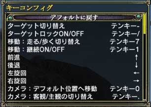
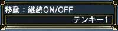

メニュー2ページ目の「コンフィグ」から「その他」を選び、「キーコンフィグ」を選択してください。
変更したいキー設定にカーソルを合わせ、エンターキーを押した後、使いたいキーを押してください。キー設定が変更されていれば成功です。なお、変更したキーが別の設定に使われていた場合は、キー設定が交換されます。
例)
テンキー「8」は上へ移動、Eは「装備変更」ウインドウを開くに設定されているとする。上への移動をEに設定した場合、「装備変更」ウィンドウを開くキーは自動的にテンキー「8」となる。
なお一部のキー設定はキーコンフィグで変更できない、もしくはキーコンフィグに表示されていないものがあります。詳しい内容は「キー設定のPDFファイルをダウンロード」でPDFファイルをダウンロードして調べてください。
 
(左：メニュー 右：キーコンフィグ)

(好きなキーを設定してください) |
|